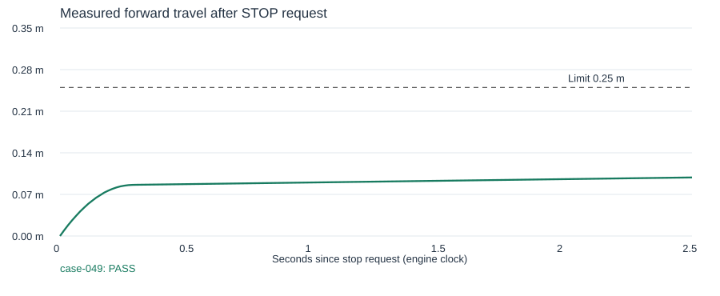

Measured in OmniSim using the configured robot model and a dedicated deterministic wheel controller. Simulation only. Each spec records robot, surface, incline, mounted payload and any controller delay; these findings do not establish vendor hardware or firmware performance. The requirement is frozen in each spec.json. Verdicts are recomputable from the saved per-step traces.

| Case | Verdict | Initial m/s | Forward m | Stop s | Command delay s | Reasons |
|---|---|---|---|---|---|---|
| case-049 | PASS | 0.6056 | 0.0985 | 0.2880 | 0.0000 |
Cases link to verdict.json. Each case also contains spec.json, manifest.json, commands.jsonl, trace.jsonl, completion.json and the engine log/Newton sidecar. Missing observations produce INCONCLUSIVE, never PASS. Compare cases with identical requirements and speed; confirmation at another speed is a separate condition.